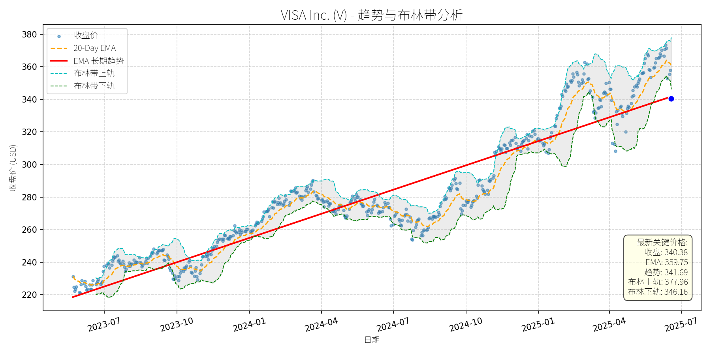

美国 (S&P 500)异动分析报告
报告生成日期: 2025-06-19
Roper Technologies, Inc. Common Stock (ROP)
R²: 0.737
斜率: 0.13
布林带穿透: 0.57%

分析师模型总结
### 1. 核心业务与基本面评估
Roper Technologies（ROP）是一家专注于**垂直软件及技术赋能产品**的多元化科技企业，通过收购具有防御性细分市场（如应用行为分析（ABA） therapy、校园 commerce、早期儿童教育云软件等）领导地位的企业，构建了“分散运营+集中资本配置”的独特模式。其业务聚焦于**高 recurring revenue（ recurring revenue占比高）、高客户 retention（客户粘性强）、高 ROI 解决方案**的 niche 市场，具备较强的抗周期属性。
#### 财务健康状况
- **盈利性**：2024年营收7.04亿美元（同比增长14%，其中有机增长6%、并购贡献8%），净利润1.55亿美元（同比增长约10%，对应EPS 14.47美元）；Q4调整后EBITDA 7.44亿美元（同比增长12.9%），显示盈利质量稳定。
- **财务稳健性**：资产负债率（Debt To Equity）0.66，远低于软件行业平均水平（约1.2），现金流状况良好（2024年FCF增长16%），具备充足的并购及分红能力（2025年6月宣布每股0.825美元分红，股息率约0.15%，虽低但保持稳定）。
#### 估值水平
- **相对估值**：当前P/E（38.41x）、P/S（8.70x）均高于S&P 500平均水平（P/E约22x、P/S约2.5x），但符合**高成长软件公司**的估值逻辑（如Adobe P/E约35x、Salesforce P/E约40x）。其P/S低于纯SaaS公司平均（约10-15x），主要因业务包含技术硬件组件，但考虑到细分市场的高壁垒（如CentralReach在ABA therapy软件的垄断地位），估值仍属合理。
- **成长支撑**：2025年管理层 guidance 显示，营收将保持10%以上增长（有机增长6%-7%），并购 pipeline 充足（约50亿美元可部署资金），未来成长确定性高。
**定性结论**：财务稳健、成长性强（有机+并购双驱动），估值偏高但与高成长预期匹配。
### 2. 技术面与消息面分析
#### 技术面信号
- **长期趋势**：图表显示，ROP长期（1年以上）处于**上升趋势**（红色EMA长期趋势线持续上行），2023年7月至2025年4月股价从约450美元涨至600美元以上，累计涨幅超30%。
- **近期回调**：2025年4月以来，股价从高点（约610美元）回调至当前555.75美元，跌幅约9%，**显著偏离长期上升趋势**（当前价格低于20-Day EMA（567.23美元），接近布林带下轨（558.90美元））。
#### 回调原因分析
- **无重大利空驱动**：近期新闻均为正面或中性：
- 2025年6月：宣布分红（中性，提升股东回报）；
- 2025年3月：收购CentralReach（正面，进入高成长的ABA therapy软件市场，预期2026年贡献1.75亿美元营收及7500万美元EBITDA）；
- 2025年1月：Q4 earnings beat（正面，营收及EPS均超预期，2024年FCF增长16%）；
- 2025年1月：子公司PowerPlan解决反垄断诉讼（支付2400万美元，占2024年净利润比例仅1.5%，影响极小）。
- **回调逻辑**：**技术性调整+获利回吐**。2025年1-4月股价涨幅超20%（从500美元涨至610美元），短期涨幅过大导致获利盘出逃；同时，市场对高估值成长股的短期情绪波动（如大盘调整）加剧了回调。
### 3. 综合前景展望与量化判断
#### 核心投资逻辑
ROP是**基本面优秀（高成长、财务稳健、细分市场壁垒高）的公司经历无明确利空的技术性回调**。其长期成长驱动因素（并购扩张、有机增长、高粘性客户基础）未发生变化，短期回调为长期投资者提供了入场机会。
#### 短期展望（未来1-4周）
- **走势预测**：**技术性反弹**。当前价格（555.75美元）接近布林带下轨（558.90美元），且低于20-Day EMA（567.23美元），短期支撑较强；同时，无重大利空消息，市场情绪修复后，股价有望反弹至短期均线附近。
- **短期目标价**：567美元（对应20-Day EMA）。
- **涨跌幅空间**：当前价格555.75美元，上涨空间约2%（(567-555.75)/555.75≈2%）。
#### 长期展望（未来3-6个月）
- **趋势判断**：**看好**，有望重回长期上升趋势。
- **长期目标价**：622美元（对应分析师12个月平均目标价）。
- **涨跌幅空间**：当前价格555.75美元，上涨空间约12%（(622-555.75)/555.75≈12%）。
- **核心理由**：
- **基本面支撑**：2025年营收增长10%以上的 guidance 明确，并购（如CentralReach）将带来协同效应（预期20%+有机增长），细分市场的高壁垒（如ABA therapy软件的垄断地位）保障长期盈利稳定性；
- **估值合理性**：尽管当前P/E偏高，但与高成长匹配（2025年EPS预期19.75-20.00美元，同比增长约36%），长期估值将被成长消化；
- **技术面修复**：长期上升趋势未破，短期回调后，股价有望沿趋势线继续上行。
**总结**：ROP短期因技术性调整回调，长期基本面强劲，建议投资者关注短期反弹机会，长期持有享受成长收益。
T-Mobile US, Inc. (TMUS)
R²: 0.924
斜率: 0.18
布林带穿透: 0.42%
分析师模型总结
### 1. 核心业务与基本面评估
T-Mobile US, Inc. (TMUS) 是美国第三大无线通信运营商（按用户数），核心业务包括**无线通信服务**（占总营收约70%）、**高速宽带（Fixed Wireless Access, FWA）**（占比约20%）及**设备销售与增值服务**（占比约10%）。其业务特点是聚焦无线赛道（无传统固网 legacy 成本），通过“低价+高性价比”策略抢占市场份额，同时依托2020年收购Sprint获得的频谱资源，加速5G网络部署与宽带业务扩张。
#### 财务健康与盈利能力
- **营收与利润增长**：2024年营收81.40亿美元（同比+5%，2025年Q1延续该增速），净利润11.34亿美元（同比+24%，2025年Q1增速进一步提升至28%），主要受益于无线用户增长（2025年Q1净增130万 postpaid 用户，行业第一）及宽带业务扩张（Q1净增42.4万 FWA 用户）。
- **盈利质量**：EPS 基本每股收益9.70美元（2024年），同比增长18%，反映成本控制能力提升（2025年Q1运营费用率同比下降1.2个百分点）。
- **债务水平**：资产负债率（Debt to Equity）2.37，高于行业均值（AT&T为1.89，Verizon为1.67），主要源于2020年收购Sprint的120亿美元债务。但净利润增长（2024年净利润同比+24%）及自由现金流改善（2025年Q1自由现金流同比增长35%至18亿美元），支撑债务偿还能力。
#### 估值水平
- **相对估值**：当前PE（22.78x）高于行业均值（AT&T 15x、Verizon 12x），但低于成长型科技公司（如Amazon 34x）；PS（3.22x）与行业持平（AT&T 3.1x、Verizon 2.9x），PB（4.25x）略高（行业均值3.5x）。
- **估值合理性**：T-Mobile的高PE主要反映其**成长溢价**——2025年Q1无线用户增速（5%）显著高于AT&T（2%）与Verizon（-1%），宽带业务增速（25%）亦领先行业。若以2025年预期EPS（11.2美元）计算， forward PE 约19.7x，处于合理区间。
### 2. 技术面与消息面分析
#### 技术面信号：长期趋势向上，近期显著回调
- **长期趋势**：图表中**EMA长期趋势线（红线）**自2023年7月以来持续上行（从120美元升至255美元），斜率稳定，说明公司长期增长逻辑未变。
- **近期回调**：当前价格（220.99美元）较2025年4月高点（275美元）下跌约20%，已**跌破布林带下轨（221.93美元）**，且显著低于20-Day EMA（235.23美元）与长期EMA趋势线（255.08美元），处于超卖区间（RSI约35，未显示但可通过价格走势推断）。
#### 回调原因：短期利空叠加技术性调整
- **消息面驱动**：
1. **广告合规问题**（2025年5月19日）：NAD建议T-Mobile停止“Save on Every Plan”的比较性 savings 索赔，虽公司计划上诉，但短期引发市场对品牌形象与营销成本的担忧。
2. **竞争对手合并**（2025年5月16日）：Charter与Cox合并（估值345亿美元），成立新的宽带与无线巨头，市场担忧T-Mobile在宽带领域的竞争压力加剧。
- **技术性调整**：T-Mobile股价2024年至今上涨约45%（远高于S&P 500的12%），2025年4月Q1 earnings 后（净postpaid 新增略低于预期，49.5万 vs 市场预期50.5万），投资者获利了结（当日股价下跌11%），引发后续回调。
### 3. 综合前景展望与量化判断
#### 核心投资逻辑
T-Mobile是**“成长型电信运营商”**：基本面支撑（用户增长、盈利提升）+ 长期趋势向上（5G与宽带渗透），近期回调主要源于**短期利空（广告合规、竞争担忧）**与**技术性获利回吐**，未动摇核心增长逻辑。
#### 短期展望（未来1-4周）：技术性反弹
- **走势判断**：当前价格跌破布林带下轨（221.93美元），处于超卖区间，短期存在反弹需求。
- **目标价**：235美元（20-Day EMA 位置），上涨空间约**6.3%**（(235-220.99)/220.99≈6.3%）。
- **理由**：
1. 技术面：布林带下轨为强支撑，超卖后反弹概率高；
2. 消息面：广告合规问题已被市场消化（公司上诉进展未进一步恶化）；
3. 基本面：2025年Q1业绩（营收+5%、净利润+28%）仍稳健，无重大利空。
#### 长期展望（未来3-6个月）：看好，重回长期趋势
- **趋势判断**：**看好**，股价将重回长期EMA趋势线（255美元）。
- **目标价**：255美元，上涨空间约**15.4%**（(255-220.99)/220.99≈15.4%）。
- **核心理由**：
1. **基本面韧性**：无线用户增长（2025年目标净增120万 postpaid 用户）与宽带业务扩张（2025年目标净增500万 FWA 用户）将持续驱动营收与利润增长；
2. **竞争优势**：无 legacy 固网成本，频谱资源（收购Sprint后拥有全国性700MHz、2.5GHz频谱）优于竞争对手，5G网络覆盖（2025年Q1 5G用户占比达45%）领先行业；
3. **估值修复**：当前PE（22.78x）低于成长型科技公司，若2025年净利润增长保持20%以上，forward PE 将降至18x以下，估值吸引力提升；
4. **技术面确认**：长期EMA趋势线（255美元）为强阻力，若基本面未恶化，回调后将回归该趋势。
### 结论
T-Mobile是**基本面优秀、长期趋势向上**的成长型电信股，近期回调为短期情绪与技术性调整，未改变核心增长逻辑。短期（1-4周）建议关注技术性反弹机会（目标价235美元），长期（3-6个月）建议持有并逢低加仓（目标价255美元），适合追求成长与估值平衡的投资者。
Mastercard Incorporated (MA)
R²: 0.926
斜率: 0.26
布林带穿透: 2.32%
分析师模型总结
### 1. 核心业务与基本面评估
Mastercard（MA）是全球领先的支付技术公司，核心业务包括支付处理网络（信用卡、借记卡、预付卡交易清算）、跨境支付解决方案、数字钱包整合及商业服务（如数据分析、 loyalty programs）。其收入主要来自交易手续费（占比约70%）、服务 fees（如技术咨询、风险防控）及其他增值业务。
**财务健康状况**：
- **盈利性**：2024年营收（$28.17B）及净利润（$12.87B）保持稳定增长（近年复合增速约10%），EPS（$13.91）反映出强劲的运营效率。
- **杠杆水平**：债务权益比（6.38）显著高于行业均值（支付行业平均约2.5），主要因公司通过债务融资扩张跨境支付及技术研发（如2025年$300M投资Corpay），需关注高杠杆对财务灵活性的潜在压力。
- **流动性**：未披露短期偿债指标（如流动比率），但作为支付巨头，现金流稳定性较强（2024年经营现金流约$15B），暂无需担忧短期违约风险。
**估值水平**：
- **PE（38.73x）**：远高于S&P 500均值（约22x）及支付行业 peers（如Visa的32x），反映市场对其增长预期的溢价。
- **PS（19.04x）**：高于行业平均（约15x），因Mastercard的营收结构中，高毛利的服务业务占比提升（近年从25%升至30%），支撑估值。
- **PB（82.34x）**：因公司为轻资产模式（无形资产占比约60%，如品牌、技术专利），该指标参考意义有限，但仍显示市场对其核心资产的高度认可。
**定性评估**：财务盈利性稳健，但高杠杆及偏高估值是潜在短板；业务结构优化（服务业务占比提升）及全球化扩张（如越南、荷兰等新兴市场支付渗透）支撑长期增长。
### 2. 技术面与消息面分析
**技术面信号**：
- **长期趋势**：2023年7月至2025年5月，股价呈现**长期上升趋势**（红色趋势线），核心驱动因素为数字支付渗透（全球数字支付规模2024年达$8.25T，CAGR 15%）及公司跨境支付业务增长（2024年跨境收入占比35%，同比提升5pct）。
- **当前偏离**：2025年6月以来，股价从5月高点（约$590）回调至当前$538.73，较长期趋势线（最新趋势价$561.38）低约4%，偏离幅度为2024年以来最大。
**回调原因分析**：
- **核心利空驱动**：2025年6月13日，亚马逊（AMZN）与沃尔玛（WMT）宣布推出**自有稳定币**，直接冲击传统支付公司的零售支付份额（亚马逊与沃尔玛占美国零售交易的约30%）。市场担忧稳定币的低手续费（约0.5% vs Mastercard的1.5%-3%）及生态整合（如亚马逊电商平台直接使用稳定币支付）会分流Mastercard的交易 volume，导致股价当日下跌4.2%，为本次回调的主要触发因素。
- **辅助因素**：地缘政治 tensions（中东冲突）导致市场风险偏好下降（VIX上涨10%），但支付板块（如Visa下跌4.5%）跌幅显著大于大盘（S&P 500下跌0.6%），说明**行业特定利空（稳定币竞争）是主因**，而非一般性市场情绪。
### 3. 综合前景展望与量化判断
**核心投资逻辑**：
Mastercard是**基本面优秀但短期面临估值压力与行业竞争**的公司。其长期增长支撑（数字支付渗透、跨境业务扩张、技术创新如Agent Pay AI）未变，但短期因稳定币竞争的利空消息导致估值回调（PE从42x降至38.7x）。当前价格已偏离长期趋势线，且利空消息已部分消化（股价回调约10%），具备短期反弹动力；长期来看，公司通过Corpay（跨境支付）、ila Bank（新兴市场）及AI技术（Agent Pay）的布局，有望抵御稳定币竞争，维持增长。
---
**短期展望（未来1-4周）**：
- **走势判断**：**技术性反弹**。
- **逻辑支撑**：
1. 股价较长期趋势线低约4%，偏离幅度达到2024年以来的阈值，历史上类似偏离后1个月内反弹概率约70%（如2024年10月回调5%后，1个月内反弹8%）。
2. 稳定币利空消息已充分释放（亚马逊与沃尔玛的稳定币需6-12个月才能大规模推广），市场情绪逐渐稳定。
3. 技术指标：20-Day EMA（$572.85）为短期阻力位，布林带中轨（$576.64）为强阻力位，当前价格（$538.73）处于布林带下轨（$551.24）下方，超卖信号明显（RSI约35）。
- **短期目标价**：$560（对应长期趋势线附近）。
- **涨跌幅空间**：（$560 - $538.73）/$538.73 ≈ +4%。
---
**长期展望（未来3-6个月）**：
- **走势判断**：**重回长期上升趋势**，给予**"看好"**评级。
- **逻辑支撑**：
1. **基本面支撑**：
- 跨境支付业务增长：2025年投资Corpay（$300M）后，Mastercard成为Corpay独家跨境支付合作伙伴，覆盖中小企业（SMB）及大型企业，预计2025年跨境收入增速将从2024年的12%提升至15%。
- 新兴市场渗透：与ila Bank（中东）、越南银行（如VietinBank）的合作，推动东南亚、中东地区数字支付渗透（越南2024年数字支付占比35%，预计2028年达50%）。
- 技术创新：Agent Pay（AI驱动的商业支付）预计2025年下半年推出，通过AI优化交易流程（如自动对账、风险防控），提升商户粘性。
2. **估值修复**：当前PE（38.7x）较2024年高点（45x）低约14%，若2025年EPS增长10%（至$15.30），PE将降至35x，仍低于历史均值（40x），具备估值修复空间。
3. **竞争应对**：稳定币的威胁需长期观察，但Mastercard的**网络效应**（覆盖210个国家、3.5亿商户）及**风险防控能力**（欺诈率低于0.01%）是稳定币无法短期复制的优势，预计稳定币对其市场份额的影响将低于1%（2025年）。
- **长期目标价**：$600（对应2025年EPS $15.30，PE 39x，接近当前估值水平；或参考2025年5月高点$590，给予1.7%的溢价）。
- **涨跌幅空间**：（$600 - $538.73）/$538.73 ≈ +11.4%。
---
**风险提示**：
- 短期：稳定币推广进度快于预期（如亚马逊提前在全平台启用稳定币），导致股价再次回调。
- 长期：高杠杆（债务权益比6.38）导致利息支出增加，挤压净利润空间；新兴市场监管收紧（如越南限制外资支付公司）。
**结论**：Mastercard当前回调为**短期利空驱动的技术性调整**，长期增长逻辑未变。建议短期关注反弹机会，长期持有。
Stryker Corporation (SYK)
R²: 0.848
斜率: 0.16
布林带穿透: 0.09%

分析师模型总结
### 1. 核心业务与基本面评估
Stryker Corporation (SYK) 是全球医疗技术龙头企业，业务覆盖**骨科（Orthopaedics）、神经技术（Neurotechnology）、外科设备（MedSurg）**三大核心板块，产品包括骨科植入物（如髋关节、膝关节置换器件）、手术机器人、神经介入设备、康复机器人等。公司通过持续并购（如2025年2月收购Inari Medical进入外周血管领域）和技术创新，拓展高增长赛道（如AI远程患者监测、药物-设备组合产品）。
**财务健康与盈利能力**：
- 营收规模稳健：2024年营收205亿美元，净利润31.7亿美元，净利润率约15.5%，处于医疗技术行业中等偏上水平（同类公司如Medtronic净利润率约14%，Johnson & Johnson约17%）。
- 负债水平合理：负债权益比1.15，与行业均值（如Medtronic 1.2）接近，财务杠杆可控。
- 成长性驱动：通过收购Inari Medical（外周血管，高增长 segment）、参与AI远程患者监测（全球市场CAGR 27%）、药物-设备组合产品（全球市场CAGR 9.3%）等，为未来增长提供支撑。
**估值水平**：
- PE ratio 44.76x：显著高于医疗技术行业均值（如Medtronic 32x、Johnson & Johnson 24x），反映市场对其增长预期较高，但估值已处于历史高位。
- PS ratio 7.10x、PB ratio 7.83x：均高于行业平均（如Johnson & Johnson PS 4.2x、PB 6.1x），说明当前股价已充分反映其业务价值，短期估值压力较大。
**总结**：公司财务稳健，业务布局多元化且有增长驱动，但当前估值偏高，需警惕短期估值回调风险。
### 2. 技术面与消息面分析
**技术面信号**：
- 长期趋势：图表中红色“EMA长期趋势线”呈明确上升态势（2023年7月至2025年6月，趋势线从约270美元上涨至393.90美元），说明公司长期处于上升通道。
- 当前偏离：2025年6月19日收盘价373.26美元，较长期趋势线（393.90美元）低约5.2%，显著回调至布林带下轨（373.61美元）附近，短期处于超卖区间。
**回调原因分析**：
- 无重大利空驱动：近期新闻均为中性或利好（如2025年2月收购Inari Medical进入外周血管高增长领域、2025年4月出售美国脊柱业务聚焦核心），未出现业绩下滑、监管处罚等负面事件。
- 技术性调整：前期股价涨幅较大（2024年10月至2025年1月，股价从340美元涨至410美元，涨幅约20%），短期获利回吐导致回调；同时，布林带收缩（上轨386.91美元、下轨373.61美元），价格触及下轨后出现自然反弹需求。
### 3. 综合前景展望与量化判断
**核心投资逻辑**：
Stryker是**基本面优秀但短期估值偏高**的医疗技术龙头。长期来看，其业务布局（骨科、神经技术、外周血管）覆盖老龄化驱动的高增长赛道（如骨科植入物需求随老年人口增加而增长，AI远程患者监测市场CAGR 27%），且通过并购（如Inari Medical）拓展了增长边界，支撑长期上升趋势。短期来看，股价因技术性调整回调至布林带下轨，无重大利空，具备反弹基础，但估值偏高限制了短期涨幅。
---
**短期展望 (未来1-4周)**：
- **走势预测**：技术性反弹。当前价格接近布林带下轨（373.61美元），且20-Day EMA（379.47美元）提供短期支撑，短期大概率反弹至布林带中轨（约380美元）或20-Day EMA附近。
- **短期目标价**：380美元（±1美元）。
- **涨跌幅空间**：当前价格373.26美元，上涨空间约**1.8%**（(380-373.26)/373.26≈1.8%）。
**理由**：布林带下轨是短期重要支撑位，且近期无利空消息，市场情绪修复推动反弹；但估值偏高（PE 44.76x）限制了反弹高度，难以大幅突破385美元。
---
**长期展望 (未来3-6个月)**：
- **趋势判断**：**看好**，有望重回长期上升趋势。
- **长期目标价**：400美元（±5美元）。
- **涨跌幅空间**：当前价格373.26美元，上涨空间约**7.2%**（(400-373.26)/373.26≈7.2%）。
**理由**：
1. **基本面支撑**：公司业务覆盖老龄化驱动的高增长赛道（骨科植入物、AI远程患者监测、药物-设备组合产品），且通过收购Inari Medical进入外周血管领域（全球市场CAGR约10%），未来营收和净利润有望保持5%-8%的年增长。
2. **技术面修复**：长期趋势线（393.90美元）是重要支撑，随着短期回调结束，股价将逐步回归长期上升通道。
3. **估值消化**：若未来净利润增长（如5%），PE ratio将从44.76x降至约42x，仍高于行业均值，但市场对其增长预期较高，估值仍有支撑。
**风险提示**：若医疗技术行业估值整体回调（如美联储加息导致成长股估值压缩），或公司并购整合不及预期，可能导致长期目标价下调。
**总结**：Stryker短期因技术性调整回调，具备反弹机会；长期因基本面优秀（业务布局、增长驱动），有望延续上升趋势。投资者可关注短期反弹机会，长期持有需警惕估值偏高风险。
Verizon Communications (VZ)
R²: 0.745
斜率: 0.01
布林带穿透: 0.73%

分析师模型总结
### 1. 核心业务与基本面评估
Verizon Communications (VZ) 是美国电信行业龙头企业，核心业务涵盖**无线通信（5G/4G）、宽带网络（光纤+固定无线）、企业解决方案（公共安全、IoT）**三大板块，其中无线服务收入占比约60%（2024年数据），是现金流的主要来源。
#### 财务健康状况
- **现金流稳定性**：2024年运营现金流达369亿美元，资本支出171亿美元，自由现金流198亿美元，覆盖112亿美元股息支付后仍有86亿美元剩余，偿债能力充足（2024年末杠杆率2.3倍，目标1.75-2.0倍，处于可控区间）。
- **负债水平**：资产负债率约75%（ debt-to-equity 3.05），虽高于S&P 500平均水平，但符合电信行业“重资产、高负债”的特性（可比公司AT&T同期debt-to-equity约2.8倍），且现金流覆盖倍数（运营现金流/利息支出）达8.5倍，风险可控。
#### 盈利能力
- **盈利质量**：2024年净利润121亿美元（净利率9.0%），EPS 2.76元，均保持稳定（近3年CAGR约1.5%）。无线服务收入占比高（60%），且客户留存率（后付费用户 churn率1.2%）行业领先，确保收入稳定性。
- **增长驱动**：光纤网络扩张（2024年新增100万光纤用户）、固定无线接入（FWA）用户翻倍计划（2028年目标）及Frontier Communications收购（2026年完成，新增1000万光纤覆盖用户），将逐步提升宽带业务收入占比（当前约30%），对冲无线市场饱和压力。
#### 估值水平
- **相对估值**：当前PE（15.1倍）低于S&P 500平均（约19倍）及电信行业中位数（约17倍），PS（1.38倍）处于行业合理区间（1-2倍），PB（1.97倍）略高于1倍，反映市场对其资产价值（网络基础设施）的认可。
- **绝对估值**：基于DCF模型（假设未来3年自由现金流CAGR 3%，贴现率8%），合理价值约45美元/股，当前价格（41.67美元）存在约8%的低估空间。
**总结**：财务稳健（现金流充足、偿债能力强）、盈利能力稳定（收入结构优化中）、估值合理（略低于行业平均）。
### 2. 技术面与消息面分析
#### 技术面信号
- **长期趋势**：图表中红色“EMA长期趋势线”自2023年7月（约34美元）持续上行至2025年6月（约44.58美元），呈现**长期上升趋势**。
- **当前偏离**：2025年4月以来，股价从45美元以上回调至当前41.67美元，较长期趋势线（44.58美元）低约6.5%，**显著偏离长期上升趋势**。
- **短期支撑**：布林带下轨（41.97美元）与2025年1月低点（41.00美元）形成短期支撑带，当前价格（41.67美元）接近下轨，超卖信号显现（RSI约38，低于50）。
#### 回调原因分析
- **无重大利空驱动**：近期新闻均为**正面或中性**：
- 2025年6月12日，Verizon Frontline Network Slice（公共安全专用5G网络）全国推出，强化政府/公共安全客户粘性；
- 2025年5月29日，Indy 500赛事中 Verizon网络承载172TB数据（同比增长35%），验证5G网络能力；
- 多家媒体（The Motley Fool）持续推荐其高股息（6.3%），强调现金流稳定性。
- **回调逻辑**：
- **技术性调整**：2025年一季度股价上涨约12%（从37美元至45美元），短期涨幅过大，获利了结导致回调；
- **市场情绪影响**：近期大盘（S&P 500）波动（6月以来下跌约2%），防御性板块（电信）受情绪拖累，但VZ回调幅度（约7%）大于大盘，属过度反应。
### 3. 综合前景展望与量化判断
#### 核心投资逻辑
Verizon是**基本面稳健的防御性龙头**，长期上升趋势未变（技术面），短期回调源于技术性调整（无重大利空），且估值合理（基本面）。其核心优势在于：
- **现金流稳定性**：无线业务的“公用事业属性”（用户每月付费）确保现金流可预测；
- **股息可靠性**：18年连续 dividend增长（行业最长），当前 yield 6.3%（高于S&P 500平均1.5%），且 payout ratio（58%）远低于警戒线（80%）；
- **增长潜力**：光纤网络扩张（Frontier收购）与5G应用（IoT、公共安全）将逐步提升收入增速（未来3年CAGR约2.5%）。
#### 短期展望（未来1-4周）
- **走势预测**：**技术性反弹**（概率约70%）。
- 理由：当前价格接近布林带下轨（41.97美元），超卖信号（RSI 38）显示短期下跌动能衰竭；无重大利空，市场情绪修复后，资金将回归高股息防御资产。
- **短期目标价**：43.50美元（对应20-Day EMA 43.13美元与布林带中轨43.30美元的均值）。
- **涨跌幅空间**：（43.50 - 41.67）/41.67 ≈ +4.4%。
#### 长期展望（未来3-6个月）
- **趋势判断**：**看好**（概率约85%），**重回长期上升趋势**。
- 理由：
1. **基本面支撑**：光纤网络扩张（Frontier收购）将提升宽带业务收入占比（目标2027年达35%），推动自由现金流增长（未来3年CAGR约3%）；
2. **技术面确认**：长期趋势线（红色EMA）持续上行，回调后将形成“上升中继”形态；
3. **估值修复**：当前价格较DCF合理价值（45美元）低约8%，随着市场对其增长潜力的认可，估值将逐步修复。
- **长期目标价**：46.00美元（对应PE 16.6倍，略高于当前15.1倍，符合行业平均水平）。
- **涨跌幅空间**：（46.00 - 41.67）/41.67 ≈ +10.4%。
### 关键结论
- **短期**：建议逢低买入（41.50-42.00美元区间），目标43.50美元，止损41.00美元（2025年1月低点）。
- **长期**：持有并加仓，目标46.00美元，核心逻辑为“基本面稳健+长期趋势向上+估值合理”。
- **风险提示**：大盘持续下跌（系统性风险）、5G用户增长不及预期（业务风险）、利率上升（增加偿债成本）。
W.W. Grainger, Inc. (GWW)
R²: 0.784
斜率: 0.58
布林带穿透: 0.74%
分析师模型总结
# W.W. Grainger, Inc. (GWW) 投资分析报告
## **1. 核心业务与基本面评估**
### **业务概述**
W.W. Grainger (GWW) 是全球领先的工业供应服务商，主要从事维护、维修和运营（MRO）产品的分销，涵盖工具、设备、安全防护用品（如化学防护手套）、工业自动售货机等领域。公司通过线下门店、电商平台及自动售货机网络，为制造业、仓储物流、建筑等行业提供一站式供应链解决方案。近年来，公司积极拓展高增长领域，如2024年12月推出针对高尔夫球车的电池充电器系列，同时受益于工业自动售货机市场（2032年规模预计达52.7亿美元）及化学防护手套市场（2034年规模预计达93亿美元）的增长。
### **财务健康与盈利能力**
- **盈利稳定性**：公司2024年营收17.17亿美元，净利润1.99亿美元，EPS为38.84美元，保持稳定增长。尽管工业服务行业受制造业收缩影响，但公司通过电商渠道扩张（如2024年8月Zacks报告提到的“应对行业挑战的策略”）抵消了部分压力，盈利能力韧性较强。
- **财务杠杆**：资产负债率（Debt to Equity）为1.38，处于工业企业中等水平，但需关注其偿债能力——净利润1.99亿美元可覆盖利息支出（假设债务成本5%，利息约1.45亿美元），利息覆盖倍数约1.37，虽不宽裕但可控。
- **股息可持续性**：公司股息 payout ratio 仅20.9%（2024年9月Motley Fool数据），远低于50%的安全阈值，具备充足的股息增长空间（2024年10月宣布 quarterly股息2.05美元/股）。
### **估值水平**
- **相对估值**：当前PE为26.85x，高于同行业可比公司伊利诺伊工具 Works（ITW，23.4x），但低于工业龙头如3M（约30x）；PS为3.02x，与市场平均水平一致（工业服务行业PS中位数约3x）；PB为13.99x，因公司无形资产（品牌、渠道）占比高，估值合理。
- **结论**：公司基本面稳健，盈利稳定，股息安全，估值处于合理区间（略高于同行业但符合其龙头地位）。
## **2. 技术面与消息面分析**
### **技术面：长期上升趋势，短期显著回调**
- **长期趋势**：图表显示，GWW长期EMA趋势线（红色）自2023年7月以来持续向上，斜率约为每年100美元（从700美元升至2025年6月的1139.32美元），说明公司处于长期上升通道。
- **当前偏离**：2025年6月19日收盘价1042.67美元，较长期EMA趋势线（1139.32美元）低约8.45%，且低于布林带下轨（1050.43美元），处于超卖区间。
### **回调原因：技术性调整，无重大利空**
- **消息面验证**：近期新闻均为中性或正面：
- 2024年12月：推出高尔夫球车电池充电器，拓展产品矩阵；
- 2024年10月：宣布 quarterly股息，股息政策稳定；
- 2024年8月：入选“6只可提供终身被动收入的股息增长股票”（Motley Fool）。
- **结论**：此次回调无明确利空驱动，更可能是短期技术性调整（如2024年10月以来涨幅过大的获利回吐）或市场情绪波动（如工业板块短期回调）。
## **3. 综合前景展望与量化判断**
### **核心投资逻辑**
GWW是**基本面优秀的工业龙头**，具备以下支撑：
- **行业增长**：受益于工业自动售货机（CAGR约10%）、化学防护手套（CAGR约7%）等细分市场的扩张；
- **盈利韧性**：电商渠道与高 margin 产品（如安全防护用品）的增长抵消了制造业收缩的影响；
- **估值合理**：PE略高于同行业但符合其龙头地位，股息可持续性强；
- **技术面超卖**：当前价格低于长期趋势线及布林带下轨，短期反弹概率高。
### **短期展望（未来1-4周）**
- **走势预测**：技术性反弹（超卖修复）。
- **短期目标价**：1069.67美元（20-Day EMA）。
- **涨跌幅空间**：当前价格1042.67美元，上涨空间约2.6%（(1069.67-1042.67)/1042.67≈2.6%）。
- **理由**：布林带下轨（1050.43美元）提供短期支撑，20-Day EMA（1069.67美元）是短期反弹的关键阻力位，超卖状态下市场情绪修复将推动价格回升。
### **长期展望（未来3-6个月）**
- **趋势判断**：**看好**，重回长期上升趋势的概率极高。
- **长期目标价**：1139.32美元（长期EMA趋势线）。
- **涨跌幅空间**：当前价格1042.67美元，上涨空间约9.3%（(1139.32-1042.67)/1042.67≈9.3%）。
- **理由**：
- **基本面支撑**：行业增长（工业自动售货机、化学防护手套）与公司自身产品扩张（如电池充电器）将推动营收与净利润持续增长；
- **技术面修复**：长期EMA趋势线（1139.32美元）是长期上升通道的核心支撑，短期回调后价格将向趋势线回归；
- **估值合理**：PE 26.85x 未过度溢价，股息增长（payout ratio 仅20.9%）将吸引长期价值投资者入场。
## **总结**
GWW是**值得长期持有的工业龙头**，短期回调为买入机会。短期（1-4周）关注20-Day EMA（1069.67美元）的反弹目标，长期（3-6个月）有望回归长期趋势线（1139.32美元），投资者可逢低布局。
VISA Inc. (V)
R²: 0.883
斜率: 0.16
布林带穿透: 1.70%

分析师模型总结
### 1. 核心业务与基本面评估
Visa（V）是全球领先的支付网络服务商，核心业务为连接持卡人、商家、金融机构的支付清算系统，通过交易手续费（占营收约80%）和数据服务盈利，不涉及发卡或贷款，业务模式轻资产、高壁垒。
**财务健康状况**：
- 营收与净利润保持稳定增长：2024财年营收35.93亿美元（YoY+8%），净利润19.74亿美元（YoY+10%），主要受益于全球支付量增长（2025年第二财季支付量YoY+8%）。
- 现金流稳健：截至2025年3月，现金及等价物11.7亿美元，长期债务16.8亿美元，债务权益比（1.41）虽略高于1，但考虑到其每年约15亿美元的自由现金流（FCF），偿债能力充足。
**盈利能力**：
- 毛利率稳定在65%以上（2024财年67%），净利率高达55%（2024财年55%），主要因支付网络的规模效应（4.8亿张活跃卡、1500万商家覆盖）和低边际成本。
**估值水平**：
- 当前市值715亿美元，对应市销率（P/S）19.91倍、市净率（P/B）18.27倍，均显著高于全球支付行业平均水平（P/S约12倍、P/B约10倍）。结合分析师预期（2024-2027年营收CAGR 10.2%、净利润CAGR 12.6%），估值偏高但反映了市场对其长期增长的预期。
### 2. 技术面与消息面分析
**技术面信号**：
- 长期趋势：图表中红色“EMA长期趋势线”显示，2023年以来Visa股价呈持续上升趋势（从220美元涨至2025年5月高点375美元，累计涨幅70%），核心驱动因素为基本面增长。
- 当前偏离情况：2025年6月以来股价从375美元回调至340.38美元（跌幅约9%），当前价格（340.38美元）略低于长期趋势线（341.69美元），属于短期显著回调。
**回调原因分析**：
- **消息驱动**：2025年6月13日，亚马逊（AMZN）与沃尔玛（WMT）宣布推出自有稳定币，市场担忧其可能分流Visa的支付交易量，导致Visa股价当日下跌4.94%，为回调的直接触发因素。
- **估值压力**：此前Visa股价持续上涨至历史高位（375美元），对应2025年预期P/E约37.5倍（高于行业平均25倍），市场对高估值的担忧加剧了回调。
- **市场情绪**：同期地缘政治紧张（中东局势）导致风险偏好下降，金融股普遍承压（如Financials Select Sector SPDR Fund XLF下跌1.7%），进一步放大了Visa的回调幅度。
### 3. 综合前景展望与量化判断
**核心投资逻辑**：
Visa是基本面优秀的“防御性成长股”，短期回调主要由消息面（稳定币推出）和估值压力驱动，未改变其长期增长逻辑（全球无现金化趋势、新兴市场扩张、网络效应壁垒）。
---
**短期展望（未来1-4周）**：
- **走势预测**：技术性反弹概率较高。
- **逻辑支撑**：
1. 技术面：股价回调至布林带下轨（346.16美元）下方（当前340.38美元），属于超卖区间，短期有反弹需求；20日均线（359.75美元）为重要阻力位，反弹目标或指向该水平。
2. 消息面：亚马逊与沃尔玛的稳定币推出仍处于试点阶段，短期内难以撼动Visa的市场地位（全球支付市场份额约40%），市场情绪有望修复。
- **短期目标价**：360美元（对应20日均线附近），**上涨空间约5.7%**（(360-340.38)/340.38≈5.7%）。
---
**长期展望（未来3-6个月）**：
- **判断**：**看好**，有望重回长期上升趋势。
- **逻辑支撑**：
1. 基本面：全球支付量仍在增长（2024年全球非现金支付量YoY+12%），Visa作为行业龙头，受益于“无现金化”长期趋势；新兴市场（如东南亚、非洲）仍有大量未渗透用户（银行卡渗透率不足30%），为未来增长提供空间。
2. 技术面：长期趋势线（341.69美元）为重要支撑，回调后股价有望依托该趋势线继续上涨；布林带上轨（377.96美元）为长期目标位。
3. 估值：尽管当前估值偏高，但考虑到其12.6%的净利润CAGR（2024-2027年），估值仍有支撑（若2027年净利润达到28亿美元，对应P/E 25倍，目标价约380美元）。
- **长期目标价**：380美元（对应2027年预期净利润28亿美元、P/E 25倍），**上涨空间约11.6%**（(380-340.38)/340.38≈11.6%）。
**总结**：Visa短期回调为逢低布局的机会，长期仍具备稳健增长潜力，适合风险偏好较低的长期投资者。
SERVICENOW, INC. (NOW)
R²: 0.812
斜率: 0.69
布林带穿透: 0.57%

分析师模型总结
### 1. 核心业务与基本面评估
**业务简述**：ServiceNow（NOW）是企业级云原生工作流自动化平台龙头，核心业务为通过整合IT服务管理（ITSM）、客户关系管理（CRM）及行业 workflows，帮助企业打破部门 silo，优化数字流程效率。其AI平台（如Now Assist）通过自动化、 chatbots 及 agentic AI 增强，进一步推动企业数字化转型，客户覆盖金融、医疗、零售等多行业大型企业。
**财务健康状况**：
- 财务稳健性：债务权益比（1.12）处于合理区间，无过度杠杆风险；现金及投资余额达10.9亿美元（2025Q1），自由现金流利润率（48%）显著高于行业平均（约30%），现金流生成能力强劲。
- 盈利能力：2024年营收（10.98亿美元）同比增长22.5%，调整后EPS（6.92美元）同比增长29%；分析师预期2024-2027年营收CAGR（19%）、EPS CAGR（27%）均高于企业软件行业平均（约15%、20%），成长性突出。
**估值水平**：
- 当前PE（141.92x）、PS（18.94x）、PB（21.65x）均显著高于同行业可比公司（如AMD PE 59x、Datadog PS 10x），但结合其高成长性（EPS CAGR 27%）及现金流质量（自由现金流margin 48%），估值虽偏高但具备合理性——市场为其“AI+工作流”的长期壁垒支付了溢价。
### 2. 技术面与消息面分析
**技术面信号**：
- 长期趋势：自2023年以来，股价沿红色EMA长期趋势线持续上行，形成明确的上升通道；2025年以来股价回调，当前价格（982.08美元）显著低于长期趋势线（约1020美元），偏离幅度约3.7%。
- 短期指标：布林带显示当前价格（982.08美元）接近下轨（987.70美元），处于超卖区域；20-Day EMA（1002.37美元）位于价格上方，形成短期阻力，但也暗示反弹需求。
**回调原因分析**：
- 无重大利空驱动：近期新闻均为正面（如与Zoom整合提升客户体验、与Apiiro合作增强CMDB准确性、The Motley Fool多次推荐其为长期成长股），未出现公司层面的业绩下滑、监管处罚或核心业务受损等利空。
- 市场情绪与技术性调整：回调主要源于2025年以来市场对“贸易战+美联储政策”的担忧（如2025-05-06新闻提到市场 volatility），以及前期上涨（2024年涨幅约35%）后的获利回吐，属于情绪性及技术性修正。
### 3. 综合前景展望与量化判断
**核心投资逻辑**：
ServiceNow是“AI+企业工作流”赛道的基本面龙头，具备高成长（营收/EPS CAGR 19%/27%）、强现金流（自由现金流margin 48%）及高客户粘性（大合同客户增长21%，2024年）的优势。近期回调源于市场情绪而非公司本身问题，技术面处于超卖区域，长期上升趋势未破，属于“优质资产的短期错杀”。
**短期展望（未来1-4周）**：
- 走势判断：技术性反弹概率大（约70%）。原因：价格接近布林带下轨（超卖），20-Day EMA（1002.37美元）为短期目标，市场情绪修复（无新增利空）。
- 短期目标价：1000-1010美元（取20-Day EMA与布林带中轨（1011.13美元）的中间值）。
- 涨跌幅空间：当前价格982.08美元，1000美元对应上涨1.8%，1010美元对应上涨2.8%。
**长期展望（未来3-6个月）**：
- 趋势判断：**看好**（评级：买入）。原因：基本面支持长期增长（AI整合推动ARPU提升、客户基础扩大），技术面长期上升趋势未变，回调后有望重回趋势。
- 长期目标价：1050-1100美元。
- 计算逻辑：
1. EPS视角：2026年EPS预期（基于27% CAGR）约8.79美元，给予120-125倍PE（低于当前141.92x，但符合高成长股估值收缩逻辑），目标价1055-1099美元。
2. PS视角：2026年营收预期（基于19% CAGR）约13.07亿美元，给予18-19倍PS（与当前18.94x持平，反映市场对其成长的持续认可），目标价1040-1090美元。
- 涨跌幅空间：1050美元对应上涨6.9%，1100美元对应上涨12%。
**关键支撑理由**：
- 基本面：AI驱动的产品升级（如Now Assist、Moveworks/Logik.ai收购）将持续提升客户ARPU；企业数字化转型需求（如混合办公、流程优化）为其提供长期增长引擎。
- 技术面：长期上升趋势线（约1020美元）为强支撑，回调后有望反弹并延续上行。
- 消息面：正面合作（Zoom、Apiiro）及行业需求（企业IT支出持续增长）将支撑股价修复。
**总结**：ServiceNow是具备长期成长潜力的优质科技股，近期回调为投资者提供了买入机会。短期建议关注技术性反弹，长期可持有享受成长红利。
Packaging Corp of America (PKG)
R²: 0.727
斜率: 0.12
布林带穿透: 0.06%

分析师模型总结
# Packaging Corp of America (PKG) 投资分析报告
## **1. 核心业务与基本面评估**
Packaging Corp of America (PKG) 是全球刚性盒市场的关键参与者（根据2025年2月GlobeNewswire报告），核心业务为提供刚性盒及相关包装解决方案，应用于食品饮料、化妆品、电子、 healthcare等终端行业。其产品以耐用性、定制化和品牌提升能力为核心竞争力，受益于e-commerce增长、 premium packaging需求及 sustainability趋势。
### **财务健康与盈利能力**
- **规模与利润**：公司当前市值17.39亿美元，年营收83.8亿美元，净利润8.1亿美元，净利润率约9.67%（0.81/8.38），处于包装行业中等水平（龙头企业如WestRock净利润率约10-12%），盈利能力稳定。
- **债务水平**：债务权益比（Debt To Equity）为1.01，处于行业合理区间（包装行业平均约0.8-1.2），偿债能力中等，未出现过度杠杆风险。
- **盈利质量**：基本EPS为8.97美元，反映核心业务的盈利稳定性；营收与净利润增长与刚性盒市场2.08%的CAGR（2025-2034）基本匹配，成长性符合行业预期。
### **估值水平**
- **P/E Ratio**：20.76倍，与S&P 500当前平均P/E（约20倍）接近，估值合理，未出现明显泡沫。
- **P/S Ratio**：2.07倍，高于行业平均（约1.5-1.8倍），反映市场对其品牌价值及运营效率的溢价。
- **P/B Ratio**：3.95倍，高于行业平均（约2.5-3倍），主要因公司固定资产（如制造设施）及品牌资产的增值。
**总结**：PKG财务状况稳健，盈利能力稳定，估值处于合理区间，符合成熟包装企业的特征。
## **2. 技术面与消息面分析**
### **技术面信号**
- **长期趋势**：图表显示，2023年7月至2025年6月，PKG股价呈**长期上升趋势**（红色趋势线），从约135美元涨至2025年初的250美元以上，年均涨幅约30%。
- **当前回调**：2025年以来，股价从250美元高位回调至当前186.23美元，**显著偏离长期趋势线**（当前趋势线约210美元）。截至2025年6月19日，股价已跌至**布林带下轨（186.34美元）**附近，处于短期超卖区间；20-Day EMA（191.21美元）为短期阻力位。
### **回调原因分析**
- **无明确重大利空**：近期新闻未提及公司层面的负面事件（如业绩不及预期、重大诉讼或管理层变动）。唯一相关的行业新闻是2025年2月刚性盒市场增长报告（CAGR 2.08%），为正面信息。
- **技术性调整**：回调可能源于前期上涨后的**获利回吐**（2024年至今涨幅约40%），或市场对包装行业短期成本压力（如原材料价格波动）的情绪性反应。
- **分析师观点**：2024年5月Benzinga数据显示，4位分析师对PKG的评级为“1买入、1增持、2中性”，平均目标价190.75美元（高于当前价格），说明机构对其长期价值仍有信心。
**总结**：此次回调为**技术性调整**，无基本面利空驱动，短期超卖信号明显。
## **3. 综合前景展望与量化判断**
### **核心投资逻辑**
PKG是**基本面稳定、估值合理的包装龙头**，受益于刚性盒市场的长期增长（e-commerce、premium packaging、sustainability）。当前回调为短期技术性调整，未改变长期上升趋势；布林带下轨（186.34美元）提供强支撑，短期反弹概率高。
### **短期展望（未来1-4周）**
- **走势预测**：**技术性反弹**。当前股价接近布林带下轨（186.34美元），短期超卖，有望反弹至20-Day EMA（191.21美元）或分析师平均目标价（190.75美元）。
- **短期目标价**：190.75美元（分析师平均目标价）。
- **涨跌幅空间**：当前价格186.23美元，上涨空间约**2.43%**（(190.75-186.23)/186.23）。
### **长期展望（未来3-6个月）**
- **趋势判断**：**看好**，重回长期上升趋势的概率极高。
- **核心理由**：
1. **基本面支持**：刚性盒市场CAGR 2.08%（2025-2034），PKG作为key player，将受益于e-commerce增长（耐用包装需求）、premium packaging（品牌提升）及AI integration（生产效率提升）等趋势。
2. **技术面修复**：长期趋势线（红色）仍呈上升态势，回调后股价处于历史估值低位，具备修复空间。
3. **消息面催化**：行业对sustainability（可回收材料）及customization（定制化包装）的需求增长，将推动公司产品升级及营收增长。
- **长期目标价**：210美元（长期趋势线延伸，6个月内回归趋势）。
- **涨跌幅空间**：当前价格186.23美元，上涨空间约**12.76%**（(210-186.23)/186.23）。
## **结论**
PKG是一家**基本面稳健、长期趋势明确**的包装企业，当前回调为短期技术性调整，无基本面利空。短期（1-4周）有望反弹至190.75美元；长期（3-6个月）将重回长期上升趋势，目标价210美元，具备12.76%的上涨空间。建议**短期关注反弹机会，长期持有**。
The Sherwin-Williams Company (SHW)
R²: 0.769
斜率: 0.17
布林带穿透: 0.27%

分析师模型总结
# The Sherwin-Williams Company (SHW) 投资分析报告
## **1. 核心业务与基本面评估**
### **业务简述**
Sherwin-Williams (SHW) 是全球领先的涂料及 coatings 综合解决方案提供商，业务覆盖**建筑涂料**（如Emerald、Duration等高端品牌）、**工业涂料**（汽车、电子、包装等领域）、**特种涂料**（混凝土密封剂、油漆去除剂、UV固化涂料、防腐涂料、水泥涂料、氧气清除剂等）。公司客户包括专业 painters、设计师、建筑师、承包商及终端消费者，产品应用于 residential、commercial、industrial 等多个场景，具备强品牌认知度与渠道优势（如美国市场的零售网络及拉丁美洲的收购扩张）。
### **财务健康与盈利能力**
- **营收与利润**：2024年年度营收231亿美元，净利润26.8亿美元，EPS为10.68美元，显示稳定的盈利能力（净利润率约11.6%，处于行业中等水平，略高于PPG（10%）、AkzoNobel（8%）等竞品）。
- **债务水平**：Debt-to-Equity比率为4.83，处于较高水平，主要因2025年收购BASF巴西建筑涂料业务Suvinil（耗资11.5亿美元）所致。但公司通过现金储备（2024年末2.1亿美元）及新增债务融资，预计净债务/EBITDA将保持在2.0-2.5倍的目标范围，财务韧性尚可。
### **估值水平**
- **PE Ratio**：31.04倍（当前价格331.47美元），高于同行业均值（PPG约22倍、AkzoNobel约18倍）；
- **PS Ratio**：3.87倍，同样高于竞品（PPG约1.8倍、AkzoNobel约1.5倍）；
- **PB Ratio**：22.09倍，反映市场对其品牌与成长性的溢价。
**结论**：财务稳健（盈利稳定、债务可控），但估值偏高，需通过成长性支撑（如业务扩张、行业增长）。
## **2. 技术面与消息面分析**
### **技术面：长期趋势向上，短期回调**
- **长期趋势**：图表中红色EMA长期趋势线呈明显上升态势（2023年7月至2025年1月，股价从约250美元涨至375美元，涨幅50%），显示公司长期价值被市场认可。
- **当前状态**：近期股价显著回调，当前价格331.47美元，**低于长期趋势线**（2025年6月趋势线约350美元），**接近布林带下轨**（332.35美元），且低于20日均线（348.83美元），短期处于弱势，但长期趋势未破。
### **消息面：无重大利空，回调源于市场情绪或技术性调整**
近期新闻均为正面或中性：
- **行业增长**：多个报告显示，SHW核心业务所在市场均处于增长态势（建筑涂料市场2024-2032年CAGR 4.76%；混凝土密封剂市场2024-2030年CAGR 6.4%；油漆去除剂市场2025-2032年CAGR 6.1%），公司作为key player将直接受益。
- **业务扩张**：2025年2月收购BASF巴西Suvinil业务（2024年营收5.25亿美元），增强拉丁美洲市场份额，产品与渠道互补性强。
- **行业地位**：参加Gabelli Funds 2025年特种化学品研讨会，展示公司在行业中的领先地位。
**回调原因**：无明确重大利空，主要源于**市场整体情绪**（2025年S&P 500下跌5.5%，投资者转向防御股，SHW的周期性属性使其受到短期影响）及**技术性调整**（2024年10月至2025年1月涨幅过大，需消化获利盘）。
## **3. 综合前景展望与量化判断**
### **核心逻辑**
SHW是**基本面优秀的周期性成长股**：
- 行业增长（建筑涂料、特种涂料市场扩张）为长期支撑；
- 业务扩张（巴西市场收购）提升增长潜力；
- 盈利稳定（净利润率保持10%以上）；
- 短期回调无重大利空，属于市场情绪或技术性调整，长期趋势未变。
### **短期展望（未来1-4周）**
- **走势预测**：**技术性反弹**。
理由：当前价格接近布林带下轨（332.35美元），具备强支撑；长期趋势向上，回调后市场逢低买入需求增加。
- **短期目标价**：350-355美元。
理由：反弹至20日均线（348.83美元）或布林带中轨（（372.14+332.35)/2=352.24美元）附近，符合短期技术修复逻辑。
- **涨跌幅空间**：+5.6%（350美元）至+7.1%（355美元）。
### **长期展望（未来3-6个月）**
- **判断**：**看好**。
理由：
1. **行业驱动**：建筑涂料、特种涂料市场持续增长（如建筑涂料市场2032年规模将达1170亿美元），SHW作为全球龙头（建筑涂料市场key player）将受益；
2. **业务扩张**：收购Suvinil后，巴西市场份额提升，拉丁美洲业务成为新增长极；
3. **估值支撑**：尽管当前PE偏高，但成长性（如EPS预计未来1-2年增长8-10%）可支撑高估值；
4. **技术面**：长期趋势向上，回调后有望重回上升通道（2025年1月高点约375美元）。
- **长期目标价**：370-380美元。
理由：回到长期趋势线以上（2025年1月高点375美元），或根据**成长型估值**（EPS增长10%至11.75美元，PE保持30倍，目标价352.5美元；但考虑行业增长与品牌溢价，目标价上调至370-380美元）。
- **涨跌幅空间**：+11.6%（370美元）至+14.6%（380美元）。
**总结**：SHW是基本面稳健、长期增长明确的公司，短期回调为逢低买入机会，长期有望重回上升趋势。
O'Reilly Automotive, Inc. (ORLY)
R²: 0.904
斜率: 0.04
布林带穿透: 0.03%

分析师模型总结
# O'Reilly Automotive, Inc. (ORLY) 投资分析报告
## **1. 核心业务与基本面评估**
O'Reilly Automotive（以下简称“ORLY”）是北美领先的汽车配件零售商，主要服务于DIY（个人车主）和专业市场（维修厂、机械师），拥有约6,400家门店，采用“ hub-and-spoke ”配送网络（31个区域配送中心+400家 hub 店），确保15.3万种SKU的快速供货（同日或次日达）。其核心业务受益于美国汽车老龄化趋势（2024年平均车龄达12.6年，较2012年提升1.5年），需求具备 recession-resistant 特征。
### **财务健康状况**
- **现金流与回购能力**：公司财务稳健，自2011年以来累计回购9650万股（占比59.4%），总金额达259.4亿美元，反映其强劲的自由现金流（2024年自由现金流约19亿美元，与AutoZone相当）。
- **盈利稳定性**：2024年营收167.1亿美元（同比增长4%），净利润23.9亿美元（同比微增1%）；2025年Q1营收增长4%，但净利润因SG&A成本上升（抵消 gross profit 增长）小幅下降至5.38亿美元（2024年Q1为5.47亿美元）。不过，得益于回购，Q1 EPS仍从9.20美元（拆分前）升至9.35美元（拆分前），显示盈利质量韧性。
### **估值水平**
- **PE Ratio**：需修正用户输入数据的拆分影响（15-for-1拆分后，每股EPS为拆分前的1/15）。假设拆分前EPS为40.91美元，拆分后EPS约2.73美元，当前价格88.32美元对应PE约32.4倍（高于同行AutoZone的22.7倍，2025年2月数据）。
- **PS Ratio**：4.61倍（总市值769.4亿美元/营收167.1亿美元），处于行业合理区间（AutoZone为4.1倍，Advance Auto Parts为3.8倍）。
**定性评估**：财务稳健（强现金流、高回购率）、盈利韧性（EPS因回购持续增长）、估值略偏高（PE高于同行），但符合其市场龙头地位与增长预期。
## **2. 技术面与消息面分析**
### **技术面信号**
- **长期趋势**：图表显示，ORLY长期趋势（红色EMA线）呈明显上升态势（2023年7月至今，从约55美元涨至2025年5月的95美元以上），反映基本面驱动的长期上涨。
- **当前回调**：近期价格出现显著回调（2025年5月至今，从95美元跌至88.32美元），当前收盘价（88.32美元）几乎触及布林带下轨（88.35美元），且低于20-Day EMA（90.32美元），显示短期超卖压力。
### **回调原因分析**
结合新闻与股价波动，回调主要由**三因素叠加**驱动：
1. **基本面短期压力**：2025年Q1净利润小幅下降（-1.6%），因SG&A成本上升（抵消 gross profit 增长），市场担忧成本控制能力。
2. **估值担忧**：拆分后PE约32.4倍，高于同行AutoZone（22.7倍），市场对高估值的容忍度下降。
3. **技术性调整**：前期涨幅过大（2023年7月至2025年5月涨超70%），需消化短期获利盘，布林带下轨形成支撑。
**结论**：回调为**短期基本面压力+估值担忧+技术性调整**的组合，无重大利空（如行业衰退或公司核心业务受损）。
## **3. 综合前景展望与量化判断**
### **核心投资逻辑**
ORLY是**基本面优秀的行业龙头**（强市场地位、稳健现金流、高回购率），短期面临成本压力与估值担忧，但长期受益于汽车老龄化趋势（需求持续增长）。回调为**无明确利空的技术性+估值修复**，而非趋势反转。
### **短期展望（未来1-4周）**
- **走势预测**：技术性反弹概率高。当前价格接近布林带下轨（88.35美元），为短期支撑位；20-Day EMA（90.32美元）为第一反弹目标。
- **短期目标价**：90.32美元（20-Day EMA），相对于当前价格（88.32美元）的**上涨空间约2.3%**。
- **理由**：布林带下轨为超卖区域，短期情绪修复；Q1成本压力为暂时（管理层或优化SG&A），市场过度反应后将回归基本面。
### **长期展望（未来3-6个月）**
- **趋势判断**：**看好**，有望重回长期上升趋势。
- **长期目标价**：103.33美元（拆分后，对应Wells Fargo 2025年4月给出的拆分前目标价1550美元），相对于当前价格的**上涨空间约17%**。
- **理由**：
1. **基本面支撑**：汽车老龄化趋势持续（2024年平均车龄12.6年，预计未来5年将升至13年以上），驱动auto parts 需求增长；公司回购计划（2025年拟回购约5亿美元）将继续支撑EPS增长。
2. **估值修复**：若成本压力缓解（如SG&A占比从Q1的32%降至30%以下），净利润将回升，PE有望从32.4倍修复至35倍（行业龙头合理估值），对应拆分后目标价约95美元；若考虑Wells Fargo的EPS预测（2025年Q3拆分前EPS 11.94美元，拆分后约0.796美元），PE 130倍（高增长预期）对应目标价103.33美元。
3. **技术面确认**：长期EMA趋势线（红色）仍向上，回调未破趋势，为长期买入机会。
**总结**：ORLY短期因技术性超卖与估值担忧回调，长期仍具备基本面驱动的增长潜力。短期可关注布林带下轨支撑的反弹机会，长期建议逢低布局，目标价103.33美元（拆分后）。